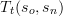
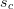
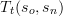
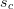
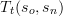
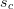

,  . In transition rules is old state, is input symbol, is new state and  is character category.
,  . In transition rules is old state, is input symbol, is new state and  is character category. The tokenizer takes input string and splits it up into tokens according to tokenizing rules . The tokenizer simulates deterministic finite state machine where the states denote the tokens. The transitions in the machine are defined by transition rules and input symbols.
In the following algorithm we represent input string as head-tail list where denotes the head symbol (list's first element) and denotes list tail (remaining symbols in the list). The rules are represented as ordered list of n-tuples where is one of the following: , ,  . In transition rules is old state, is input symbol, is new state and  is character category.
We start describing tokenizer algorithm by describing its data structures first.
Token {
name, -- name of the token
contents, -- contents of the token
line number -- line number where the token starts
}
State {
name, -- name of the state
semantics -- semantical name of the state
}
Abstract Rule {
old state -- name of the old state
new state -- name of the new state
applies(input, state) -- returns true iff state == old state and this
rule applies to current input
eat(input) -- returns input string after applying this rule
}
Since we have three different kind of transition rules we get the following concrete rules:
CharacterRule < Rule {
character class -- class of characters on which this rule is triggered
creedy -- if set true then eat() method will remove head
character of input string
applies(input, state) -- returns true iff state == old state and
the head character of input string
is in specified character class
}
EndRule < Rule {
applies(input, state) -- returns true iff state == old state and input == []
}
StringRule < Rule {
prefix -- string which must occur at the start of current input
applies(input, state) -- returns true iff state == old state and
prefix is the prefix of input string
}
The recursive tokenizing algorithm is sketched below.
Input: rules Rs, string S, list of tokens Ts found this far (initially empty), current state Tcurrent (initially start state), final state Tfinal, number of lines looked through N, current token accumulator Acc (initially empty) Output: list of tokens Tout. function Tokenize(Rs, S, Ts, Tcurrent, Tfinal, N, Acc): begin if (S == []) then begin if (exists final transition rule Tt(Tcurrent,Tnew)) then begin if (Tnew == Tfinal) then return Ts; else return Tokenize(Rs, S, Ts + Tnew, Tnew, Tfinal, N, Acc); end; else throw error "unexpected end of input near line N" end; else begin end; end;